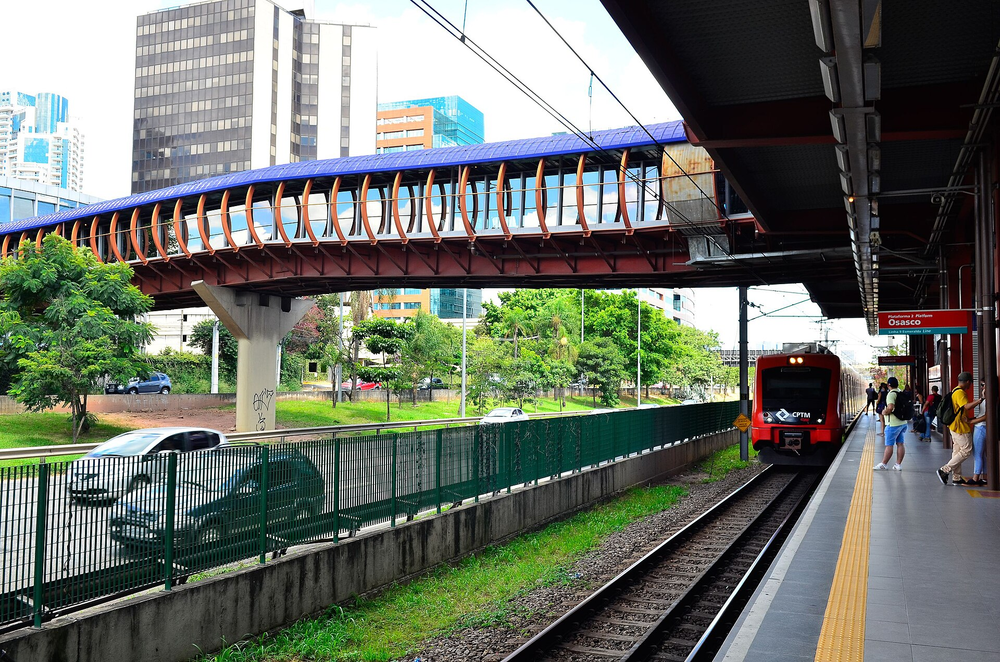
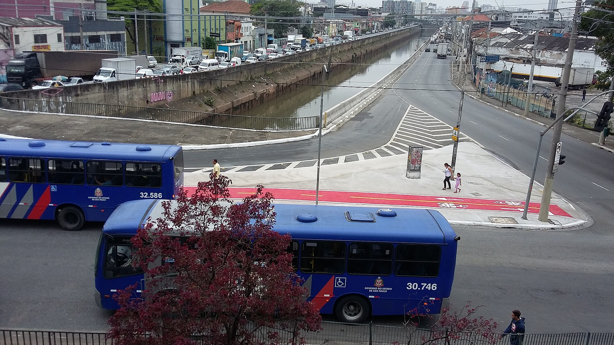
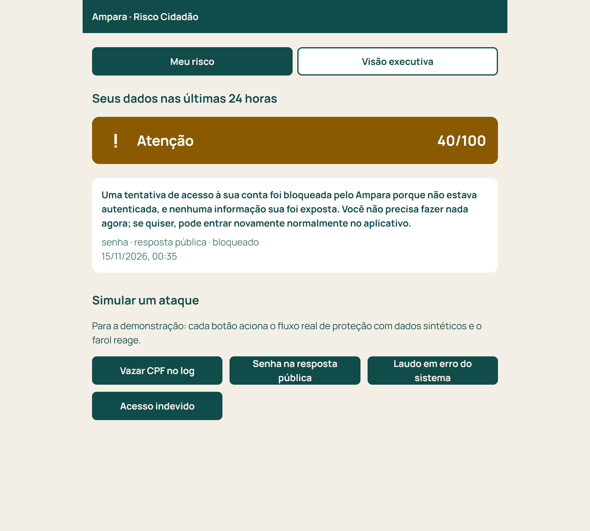

Trinta a noventa minutos sem celular.
É a janela em que a vítima está em choque a caminho de casa. É nela que os criminosos entram no banco e nas contas.
Um amigo teve o celular roubado no trem da Linha 9, com o aparelho ainda sendo pago. Uma mãe, num quebra-vidro, não lembrou das senhas, e os criminosos entraram no banco. Os dois só agiram ao chegar ao destino.
minutos entre o roubo e a primeira chance de agir. Número da spec do projeto, não medido em estudo.
Antes, durante e depois.
Cada passo traz o que roda hoje e o que ainda está em construção. Fotos em preto e branco ilustram o lugar. Capturas coloridas são do sistema.
-
Antes: o que você não lembraria
O app guarda IMEI, bancos, operadora, até 3 guardiões e a rota dos últimos 7 dias.
Só planejado: o app ainda não existe.

Plataforma da Linha 9, em Pinheiros.
-
Durante: um clique
O chaveiro (ESP32) manda um evento por MQTT. Outra opção é um código digitado em outro aparelho.
No repositório do Vitor. O ciclo até a API foi provado por script, com broker MQTT público.
Desenho do chaveiro. Ainda não há foto do protótipo.
-
A API recebe
Cria a ocorrência uma vez só, mesmo que o evento chegue cinco vezes, e responde ao chaveiro com um ack.
Roda hoje. 480 testes e 14 ataques simulados passando em 15/11.

Rotas da API no Scalar.
-
O guardião é acionado
Alarme insistente. Sem um “Estou ciente” em 60 segundos, o alerta escala ao próximo guardião.
Em construção. A API manda por SignalR, a tela cheia depende do app.
Passo a passo do guardião
- Banco--:--
- Celular Seguro--:--
- Operadora--:--
- Senhas--:--
- BO--:--
Esboço. Cada passo recebe o horário em que foi feito.
Esboço da lista que o guardião segue.
-
Depois: o BO
Por outro aparelho, a vítima marca na rota onde e quando foi roubada. A API gera o texto com local, hora, IMEI e a delegacia mais próxima.
A API gera o BO. A marcação na rota depende do app.

Avenida do Estado, corredor de quebra-vidros.
-
A polícia recebe o mínimo
Com consentimento, a Ponte recebe área de cerca de 500 m, hora e tipo. Sem CPF, nome nem IMEI. O andamento volta ao cidadão.
Roda hoje. 225 testes na evidência de 14/11.

Painel da polícia, com dados sintéticos.
-
O mapa avisa o risco
Risco por área e horário, a partir de dados da SSP-SP, mais relatos das últimas 2 horas com proteção contra abuso.
Em construção. Sem modelo treinado ainda.
Pinheiros, a estação crítica do eixo.
-
A segurança em volta de tudo
Um motor detecta dado pessoal e uma IA traduz cada bloqueio em frase clara no Painel Risco Cidadão.
Roda hoje, com dados sintéticos.

Painel Risco Cidadão, farol amarelo.
Ao vivo agora
Os serviços sobem na máquina de quem apresenta. A página pergunta a cada um se responde e, sem resposta em 2,5 segundos, diz que não. Isso mostra servidor de pé, não fluxo completo. Do painel, só confere se o Vite responde.


O que protege os dados
Cada linha da folha aponta para o ataque automatizado ou para o arquivo que a sustenta. Os limites também estão listados.
Folha de segurança
Dentro da API, na Ponte e em volta.
Dentro da API
Na Ponte Polícia
Em volta de tudo
Limites que reconhecemos
Precisão e recall de 100% medem regressão no corpus sintético. Não medem dado real.
Quem age por você
Ninguém age sozinho na janela de 30 a 90 minutos. O Ampara junta quem pode.
O guardião
Parente ou amigo que age por você na hora. Recebe o alarme, segue o passo a passo e bloqueia contas e linha.
A polícia
Recebe a ocorrência mínima, vê os pontos quentes e devolve o andamento ao cidadão.
O cidadão
Quem anda com o celular em São Paulo: passageiro de trem e metrô, motorista parado no trânsito.
Pedro Martins
Todas as partes, menos o chaveiro.
Vitor Cesarino Marchese
Chaveiro ESP32 e simulação no Wokwi.
Claude foi o copiloto de código. Todos os prompts estão em prompts.md.
Cidades e comunidades sustentáveis
Redução das desigualdades
Indústria, inovação e infraestrutura
Paz, justiça e instituições eficazes
Comece pela demo
Três serviços sobem em localhost, na máquina de quem apresenta, com dados sintéticos. Abra cada um e confira o estado agora.